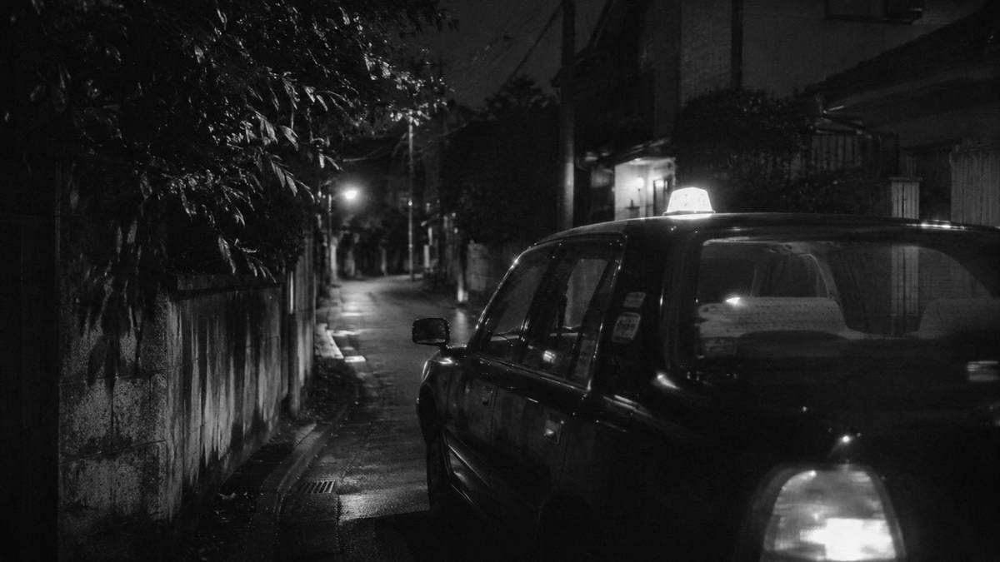
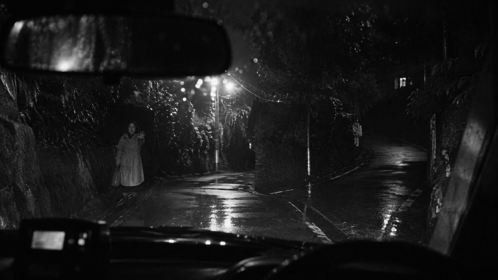
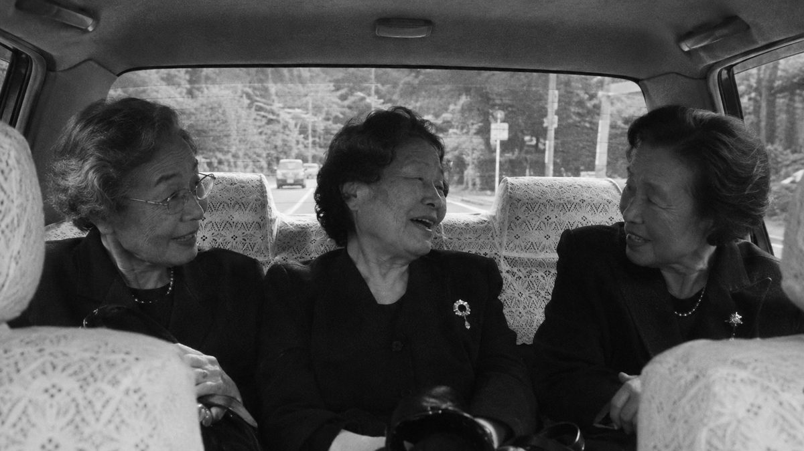

特別連載 ／ 全十三話

鎌倉には、妖怪が少ない。だが、死者が少ないわけではない。
鎌倉でタクシーに乗ると、私は必ず運転手に怖い目に遭ったことはないかと尋ねることにしている。観光客が帰ったあとの町も、まだ誰も起きていない朝の町も、彼らはよく知っている。見知らぬ人を乗せ、見知らぬ人の暮らす家まで送り届ける。そういう仕事だからこそ、出会ってしまうものもあるのではないか。
ここに十三の怪談を収める。登場するのは妖怪ではない。死者の霊や、人が死んでも消えずに残る怨念の類である。運転手から聞いた話を私が語り直すという形式で、一話ごとに編者としての考察も添えることにした。
本連載は実話怪談の語り口を用いた創作です。実際の運転手への取材記録ではなく、実在の人物・事業者の体験を示すものではありません。
怪談一覧
04 / 13第一話 ／ 材木座 ／ 2019年頃
置いていく
怪談を読む
第二話 ／ 小坪方面 ／ 2014年11月頃
曲がれない道
怪談を読む
第三話 ／ 北鎌倉 ／ 2012年頃
点呼
怪談を読む第四話 ／ 銭洗弁天 ／ 2016年頃
帰りは三人
怪談を読む- 05第五話公開予定
- 06第六話公開予定
- 07第七話公開予定
- 08第八話公開予定
- 09第九話公開予定
- 10第十話公開予定
- 11第十一話公開予定
- 12第十二話公開予定
- 13第十三話公開予定